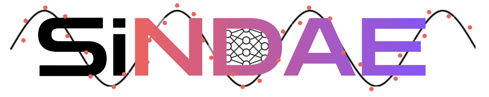
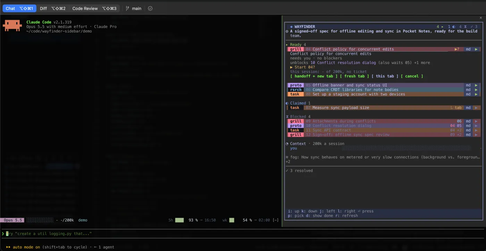

Illustrative episode on a 9-node network. The trained policy designs held-out networks of up to 70 nodes.

prey x₀predator x₁x₀′ = x₀(r₁ − a₁x₁ − b₁x₀) x₁′ = x₁ · NN(x₀, x₁) The network learns the second bracket; the first stays a hard constraint.
